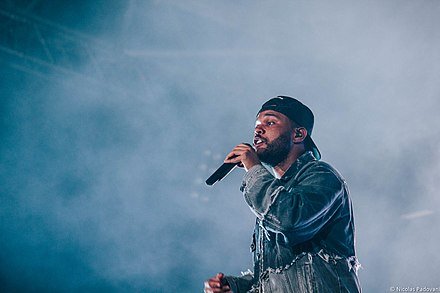

THE WEEKND
Биография
Э́йбел Макко́нен Те́сфайе(англ. Abel Makkonen Tesfaye; род. 16 февраля 1990, Торонто, Канада), профессионально известный как Уи́кнд (The Weeknd) — канадский певец, автор песен и музыкальный продюсер эфиопского происхождения. В конце 2010 года Тесфайе анонимно загрузил несколько песен на YouTube под именем «The Weeknd». На протяжении 2011 года он выпустил три микстейпа по 9 песен в каждом: House of Balloons, Thursday и Echoes of Silence, которые были одобрены критиками. Год спустя он выпустил сборник Trilogy: тридцать треков, состоящих из ремастированных версий микстейпового материала и трёх дополнительных песен. Альбом был выпущен на Republic Records и его собственном лейбле XO.